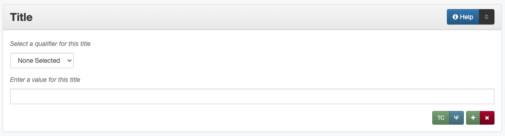

Title
Definition
A name given to the resource.
Where Can the Title Information be Found?
In some cases, titles may come from accompanying or supplementary information; generally titles may be found on the item, such as:
Item Types |
Information Sources |
|---|---|
For text |
|
For images |
|
For maps |
|
For music scores |
|
For videos |
|
For sound files |
|
For computer files |
|
How Title Works in the Metadata Form
- Parts:
Title qualifier – drop-down menu
Title – text field
- Repeatable?
Yes - to include multiple titles, click ‘Add’ to repeat all field parts
- Required?
Yes - a Main Title is required (more information)
How Should the Title be Filled in?
General Title Rules
Every record must have one Main Title, also called an “official title”
Some records may have multiple titles (see below under Special Titles for more clarification about when to use other titles)
For each title, be sure to choose the appropriate qualifier from the controlled vocabulary
Guideline |
Examples |
|---|---|
|
Reminiscences of the Terry Rangers |
|
Difficulties of a Mexican revenue officer in Texas |
|
Title: Laws of the Republic of
Texas in two volumes. Volume 1
Note: “Vol. I.”
Two Ladies in Beauty Shop
|
|
Main: Documents pertaining to the
case of Eliza Miller vs. Texas & New
Orleans Railroad Company, cause no.
547, 1902
Alternate: Documents pertaining to
case of Eliza Miller vs. T & NORR
Co.
|
|
Deaf Smith County Schools: 1893-2003 |
|
An Assessment of the Social and Special Effects of Siting a Low-Level Radioactive Waste Disposal Facility in Texas: Phase 1. Historical and Sociodemographic Dimensions |
|
[Calf-Roping in Groups at Cowtown
Coliseum]
[Certificate of Appointment of K.K.
Legett as Delegate]
[Bus Transfer Ticket #020137]
|
|
[Stan Kenton Reading a Score]
[Obituary for I. M. Cummings]
[Portrait of Susan R. Theodore]
|
|
[Correspondence between Meyer
Bodansky and A. O. Gettler - 1940]
[Maps of the United States, New
England, and Principal U.S. Cities]
|
|
Texas Board of Law Examiners Annual
Financial Report: 2016 [Audited]
Standard Varieties of Chickens:
[Part] 1. The American Class
|
|
Conrad & Menefee’s Subdivision of
Lot Number 2, Block Number 146,
Abilene, Taylor County, Texas [#2]
[Aerial View of Workers Digging a
Channel #1]
|
Standarized Titles
For some materials, we often use a standardized format for convenience and consistency
When dates are included in titles, they should be written out in “human readable” form
Guideline |
Examples |
|---|---|
|
[Letter from John C. Brewer to Emma Davis - April 21, 1879] |
|
[Clipping: Forced Sale!] |
|
[Funeral Program for Cottrell Brackett, Jr., October 10, 2012] |
|
[Invoice for Cooking Materials,
May 18, 1894]
[Receipt for Kinsel Motor Payment,
October 1936]
|
|
Documents pertaining to the case of Garner Williams & Co. vs. J. E. Ennis, Cause No. 507, 1867 |
|
AACOG Region, Volume 5, Number 9, November 1978 |
|
[Letter from Betty Scrivner to her
Mother]
[Correspondence Concerning a
Marriage License]
[Front Page of ‘The Washington
Blade,’ August 4, 2000]
[Newspaper Clippings About Dr. May
Owen and a TMA Meeting]
|
Special Titles
Does the item need multiple titles?
If… |
Add: |
|---|---|
|
an alternate title |
|
a parallel title |
|
an added title |
|
a serial title |
|
an added title |
|
a sort title |
|
a series title |
|
a uniform title |
Formatting special titles:
Guideline |
Examples |
|---|---|
If the item is part of a serial (see the serial guidelines for more information) |
|
|
Main: Prickly Pear, Yearbook of
Abilene Christian College, 1945
Serial: Prickly Pear
Added: The 1945 Prickly Pear
|
|
|
|
Main: The Debates and Proceedings
in the Congress of the United
States, Fourth Congress, Second
Session
Serial: The Debates and
Proceedings in the Congress of the
United States
Sort: Annals of Congress, Congress
4, Session 2
|
If the item is part of a series or part of a sub-collection |
|
|
Main: [Glass with picture of an
oil well]
Series: Commemorative glasses
|
Main: [War Tax Receipt, June 1862]
Series: Judge Harris Masterson I
Papers (MS 468)
|
|
If the item is in a non-English language, or is a translation |
|
|
Main: Estado libre de Coahuila y
Tejas
Parallel: [Free State of Coahuila
and Texas
|
|
Main: The Mexican Soldier,
1837-1847
Parallel: El Soldado Mexicano,
1837-1847
|
If the item title has abbreviations, acronyms, or alternate spellings |
|
|
Main: Barnhart Southwest Quadrangle |
Alternate: Barnhart SW Quadrangle |
|
|
Main: FCC Record, Volume 12, No.
20, Pages 11370 to 11956,
July 28-August 8, 1997
Alternate: Federal Communications
Commission Record, Volume 12, No.
20, Pages 11370 to 11956,
July 28-August 8, 1997
|
If a published item has multiple titles |
|
|
Main: A Memorial and Biographical
History of Navarro, Henderson,
Anderson, Limestone, Freestone and
Leon Counties, Texas
Added: The Lone Star State
|
If an item has multiple parts or sections |
|
|
Main: [Maps of Canada]
Added: Quebec
Added: Ontario
|
If the same item has been published under multiple titles |
|
|
Main: Six suites for violincello
solo
Uniform: Suites, violoncello, BMV
1007-1012
|
Main: 1980 census of population
and housing. Census tracts. Abilene,
Tex., standard metropolitan
statistical area.
Uniform: Census of population and
housing (1980). Census tracts.
|
|
If the item is a serial with a complex title pattern |
|
|
Main: Texas Eleventh Court of
Appeals Annual Financial Report:
2011
Uniform: Financial report for …
fiscal year
|
Note: In the Digital Collections, serial and series titles show up as a facet used for narrowing search results, so adding a series is one way to create a subset or grouping of items within an established collection. Also see Serials and Series for more information.
Other Examples
- Hand-carved cross
Main: [Wooden Cross]
- US Geological Survey map
Main: Map of the Woodbine Artesian Reservoirs of the Black and Grand Prairies of Texas including the Eastern and Western Cross Timbers
- Letter
Main: [Letter from Jose Maria Viesca to Lorenzo de Zavala, April 14, 1828]
- Yearbook
Main: The Swarm, Yearbook of Howard Payne University, 2005
Serial: The Swarm
Added: Building the Future, Howard Payne University 2005 Swarm, Volume 94, Brownwood, Texas
- Legislative Journal
Main: Journal of the House of Representatives of the Regular Session, Volume 2, and First Called Session of the Fifty-Ninth Legislature
Serial: Journal of the House of Representatives, Texas Legislature
Uniform: Journal of the House of Representatives of the…session of the…Legislature of Texas.
Series: 59th Legislature of Texas
Sort: Journal of the House of Representatives of the State of Texas, Legislature 59, Regular Session, Volume 2
Added: Journal of the House of Representatives of the Regular Session of the Fifty-Ninth Legislature of the State of Texas, Volume 2
Added: Journal of the House of Representatives of the First Called Session of the Fifty-Ninth Legislature of the State of Texas
- Plat Map
Main: K. K. Legett’s Subdivision of Lot Number 4 & a Part of Lot Number 5 of the Benjamin Austin Survey Number 92, Taylor County, Texas
Alternate: K. K. Legett’s Subdivision of Lot No. 4 & a Part of Lot No. 5 of the Benj. Austin Sur. No. 92, Taylor Co., Texas
- Technical Report
Main: Fuel Cycle Program Progress Report: Eleventh Quarter, January-March 1963
Added: Fuel Cycle Program. A Boiling Water Reactor Research and Development Program: Eleventh Quarterly Progress Report, January-March, 1963
Serial: Fuel Cycle Program Progress Report
Sort: Fuel Cycle Program Progress Report, Quarter 11, 1963
Series: AEC research and development report
Series: Atomic Energy Commission Reports
Series: General Electric Company Atomic Power Reports
Added: General Electric Atomic Power Equipment Department Report GEAP-4215
Resources
UNT Title Qualifier Controlled Vocabulary
Worldcat via FirstSearch (UNT staff/students can get to OCLC records through electronic resources)
More Guidelines:
Comments
Glossary of Title Types:
Code
Examples
Definition
officialtitle
Main Title
The most appropriate title to represent the individual item
alternatetitle
Alternate Title
Reflects alternate spellings, terms, or omissions (including abbreviations, acronyms, and enumerations)
paralleltitle
Parallel Title
Used for items written in non-English languages or translations from a second language
serialtitle
Serial Title
Representative of an entire serial publication
seriestitle
Series Title
Representative of an entire series of separate but related items
uniformtitle
Uniform Title
A generalized title when an item has been published under different titles
addedtitle
Added Title
Reflects additional titles or significant subsections